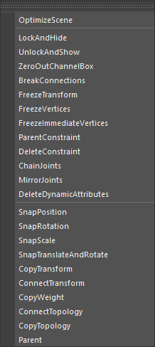

単一のコマンドを提供します。
専用のメニューからコマンドを実行します。

メニューからコマンドを選択して実行します。
コマンドにより、ノードの選択方法が異なります。以下の三つのタイプのコマンドがあります。
Scene Command
シーン全体に対して実行されるコマンドです。選択とは無関係に実行されます。
All Command
選択された全てのノードに対して実行されるコマンドです。
Pair Command
１つめに選択されたノードを基準に、２つめ以降に選択されたノードに対して実行されるコマンドです。
LockAndHide
UnlockAndShow
ZeroOutChannelBox
BreakConnections
FreezeTransform
FreezeVertices
FreezeImmediateVertices
ParentConstraint
DeleteConstraint
ChainJoints
MirrorJoints
DeleteDynamicAttributes
SnapPosition
SnapRotation
SnapScale
SnapTranslateAndRotate
CopyTransform
ConnectTransform
CopyWeight
ConnectTopology
CopyTopology
１つめに選択されたノードのトポロジーを、２つめ以降に選択されたノードにコピーします。
Parent